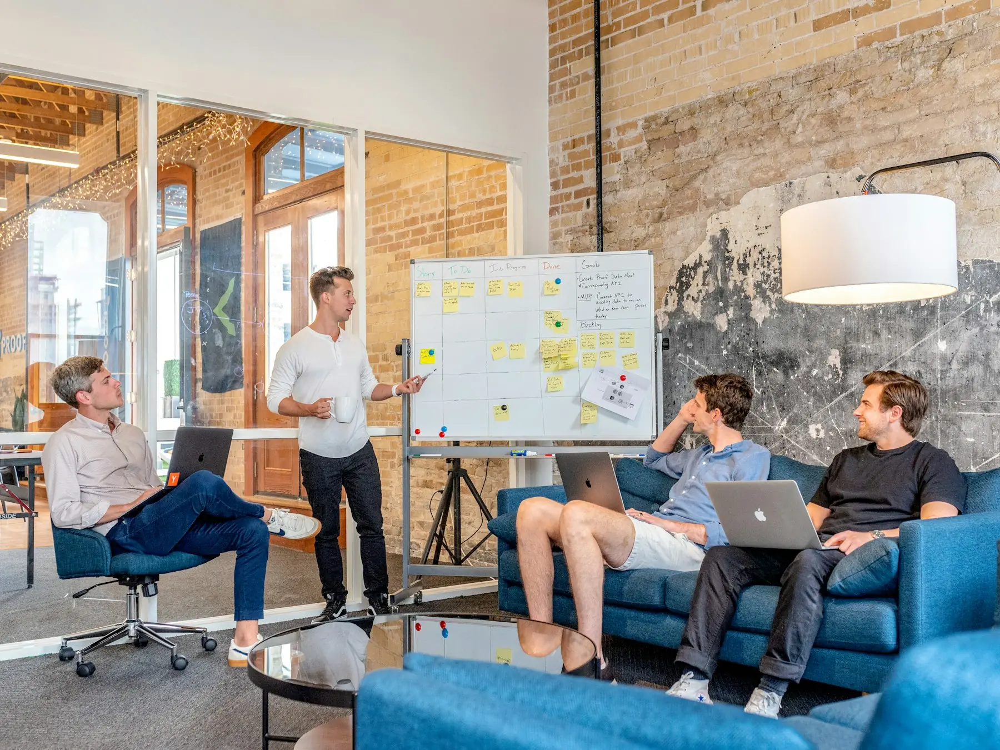
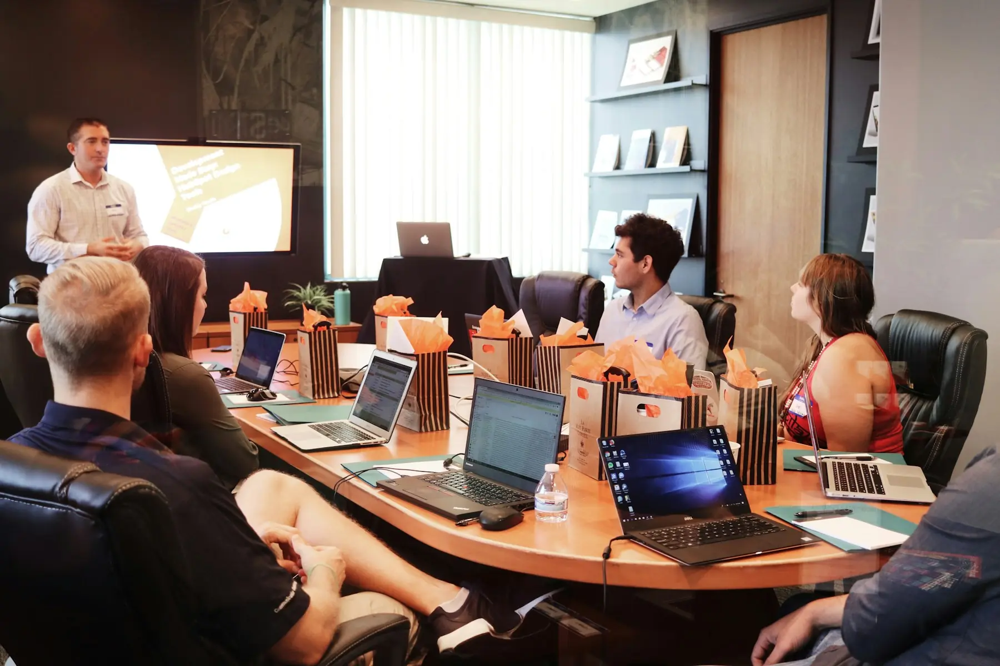

SEO Services in Patna That Put You on Page One.
Rank for What Matters. Grow Organically.
Looking for the best SEO company in Patna? Zyrostyle helps businesses across Patna and Bihar rank higher on Google, appear in the Google Maps local pack and turn organic traffic into enquiries, calls and revenue.
Your customers are already searching. Are they finding you?
Every day, people in Patna search for doctors in Kankarbagh, coaching institutes on Boring Road, flats near Saguna More and restaurants on Boring Canal Road. The businesses that appear first win the click, the call and the customer.
Our SEO services in Patna combine technical excellence, search-intent research and genuinely useful content. We fix what holds your website back, build the pages your customers are searching for and strengthen the signals Google uses to decide who deserves to rank.
Whether you need local SEO to win the map pack in your neighbourhood, e-commerce SEO to grow online sales, or B2B SEO to reach decision-makers across India, we build a search strategy around your commercial goals — not vanity rankings.
Rank for What Matters. Grow Organically.
Our SEO services include
Every engagement is tailored after a free consultation, so you invest only in what moves your business forward.
- On-page and technical SEO audits
- Keyword research and competitor analysis
- Local SEO and Google Business Profile optimisation
- Google Maps ranking and local citations
- Website architecture and internal linking
- SEO content writing and optimisation
- Core Web Vitals and page-speed improvements
- Schema markup and structured data
- E-commerce and B2B SEO strategies
- Ethical link building and digital PR
- Google Search Console and GA4 reporting
- Search visibility and conversion improvements
- 01
Technical SEO
Crawlability, indexation, site speed, mobile experience, schema markup and site architecture — the foundations that help Google discover and trust your website.
- 02
Local SEO & Google Maps
Google Business Profile setup and optimisation, local citations, review strategy and location pages that help you rank in the Patna map pack for 'near me' searches.
- 03
Content & On-Page SEO
Search-intent mapping, service-page optimisation, topic clusters and SEO blogs written for people first and optimised for search engines.
- 04
Authority & Off-Page SEO
Ethical link building, digital PR, local business listings and brand mentions that build the credibility your rankings depend on.
Local SEO built for Patna searches.
Most local buying decisions in Patna start with Google Search or Google Maps. We optimise your Google Business Profile, categories, services, photos, posts and reviews so you appear when nearby customers search for what you offer.
We create location-relevant content for areas such as Boring Road, Kankarbagh, Patliputra Colony, Bailey Road and Saguna More, and help businesses expand visibility to Gaya, Muzaffarpur, Bhagalpur, Darbhanga and other Bihar markets.
SEO isn't just about rankings. It's about getting discovered by people ready to become your customers.
Specialist SEO services in Patna.
 Google Business Profile & MapsSet Up. Optimise. Stay Active.
Technical SEOCrawl. Render. Index. Rank.
Google Business Profile & MapsSet Up. Optimise. Stay Active.
Technical SEOCrawl. Render. Index. Rank.
 On-Page & Off-Page SEORelevance On-Page. Authority Off-Page.
On-Page & Off-Page SEORelevance On-Page. Authority Off-Page.
 Link BuildingEarned, Not Bought.
Link BuildingEarned, Not Bought.
 E-commerce SEORank Categories. Sell Products.
E-commerce SEORank Categories. Sell Products.
 Website Ranking & TrafficRank. Grow. Convert.
Website Ranking & TrafficRank. Grow. Convert.

SEO ConsultantClarity Before Effort.
Affordable SEO PackagesHighest Impact First.

SEO TrainingPractise on Real Websites.From strategy to measurable growth.
A better process creates better marketing. Every engagement follows six connected steps.
Discover
We understand your business, target audience, current digital presence and growth opportunities.
Audit
We review your website, search, content, competitor and marketing performance information.
Strategise
We build a marketing roadmap around your audience, channels, objectives, budget and priorities.
Create
Our creative and content process translates strategy into campaigns, pages, messaging and assets.
Launch
We implement prioritised activities across search, content, social media and paid advertising.
Measure & Improve
We track meaningful performance indicators, identify opportunities and optimise based on results.
Your growth isn't a one-time campaign. It's a system we help you build.
SEO Services in Patna — your questions answered.
How much do SEO services cost in Patna?
SEO pricing in Patna depends on your website size, competition and goals. Local SEO for a single-location business typically needs a smaller monthly retainer than a multi-city or e-commerce SEO programme. Zyrostyle shares a transparent, custom proposal after a free audit, so you only pay for the work your business actually needs.
How long does SEO take to show results?
Most businesses see early improvements in visibility and local rankings within 8–12 weeks, while competitive keywords usually take 4–6 months or more. SEO compounds over time: the content and authority you build keep generating traffic long after the work is done.
What is local SEO and why does my Patna business need it?
Local SEO helps your business appear in Google Maps and 'near me' searches in your area. For clinics, coaching institutes, restaurants, showrooms and service businesses in Patna, it is often the fastest route to calls, direction requests and walk-ins.
Can you optimise my Google Business Profile?
Yes. We set up or audit your Google Business Profile, fix categories and service details, add photos and posts, build consistent local citations and create a review-generation process to improve your Google Maps ranking in Patna.
Do you guarantee first-page rankings?
No ethical SEO agency can guarantee rankings, because Google controls its algorithm. What we do guarantee is transparent work, white-hat methods, clear reporting and a strategy focused on traffic, leads and revenue rather than vanity metrics.
Is there a good SEO agency near me in Patna?
Yes. Zyrostyle is a Patna-based SEO agency that meets clients in person across Boring Road, Kankarbagh, Patliputra Colony, Bailey Road and Saguna More, and works remotely with businesses across Bihar.
Do you offer SEO for e-commerce and B2B websites?
Yes. We provide e-commerce SEO (category and product optimisation, technical fixes, structured data) and B2B SEO (thought-leadership content, service pages and lead-generation landing pages) for businesses in Patna and across India.
Ready to turn your business into a brand people choose?
Your next customer could already be searching for a business like yours. Make every search, every impression and every interaction count with a connected marketing strategy.
Zyrostyle — Make Your Brand Impossible to Ignore.